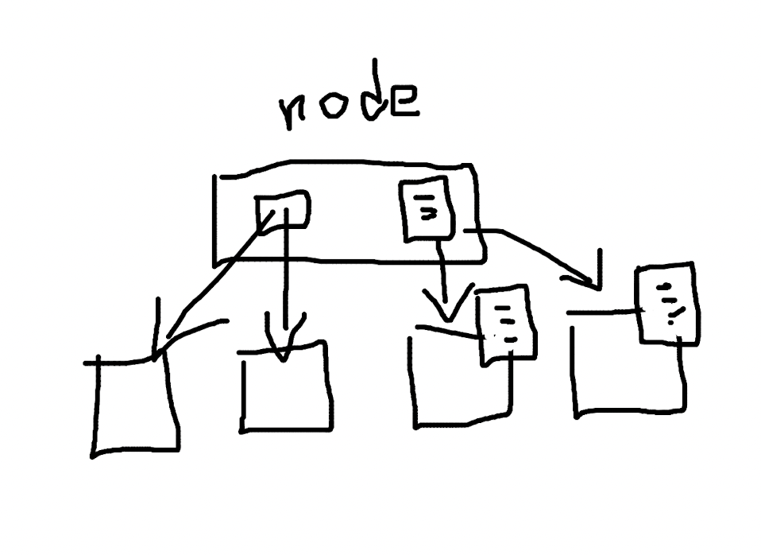

一种区块链节点存储扩容的方式
2021-11-10
区块链是天然支持水平扩容的系统，节点扩展能力首屈一指。

但区块链的垂直扩展能力还是一个经常被讨论的课题。单个节点的硬盘容量总是有限，如果节点拥有全部的数据，对单机性能要求会比较高；如果节点没有全量数据，就不能认为是 P2P 网络的节点之一。
最直接的办法就是用分布式数据库，数据库本身就支持扩容，区块链节点的存储模块就也算是支持扩容了。（如果区块链在立场上和数据库没有冲突的话。）
这里描述一种简单的实现思路的设想。
节点的垂直扩展，是想用多个节点合力代替原有的一个节点的位置，整体形式上一个集群提供了和单个节点一样的输入输出。

节点完全可以将块数据分散储存在不同的子节点上，比如按照数据库分库分表的经典思路，对块号取模，或者随机分发也行。
节点可以区分为索引节点和存储节点，索引节点只记录块号和子节点的对应关系，子节点集群就作为索引节点的储存模块。索引节点同时负责发送和接收块等操作。除了网络延迟带来的存取速度的降低，似乎没有大碍。
对于节点类型的问题，是必须要有不只一种类型的节点吗？有没有办法实现只要一份源代码、只有一种二进制程序、只用一种类型的节点，就能实现所有的功能？当然，不是说把三种类型的节点打包到一起就行了。由于功能侧重点的不同，尤其是节点 “身份” 的不同，可能节点不得不区分类型。一个节点对外提供能力和一个集群合作对外提供能力，集群内的节点和单个节点应该是一样的地位吗？
将块数据分散开后，对于 “世界状态” 一类的数据，可以全部储存在索引节点上。

如果状态数据也想扩容，同样可以只在索引节点上保留索引数据，然后将状态数据也分散到储存节点上。
这样的方案也许过于简单了，万一行之有效呢。